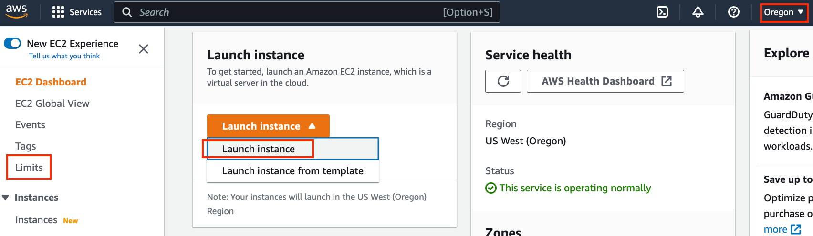
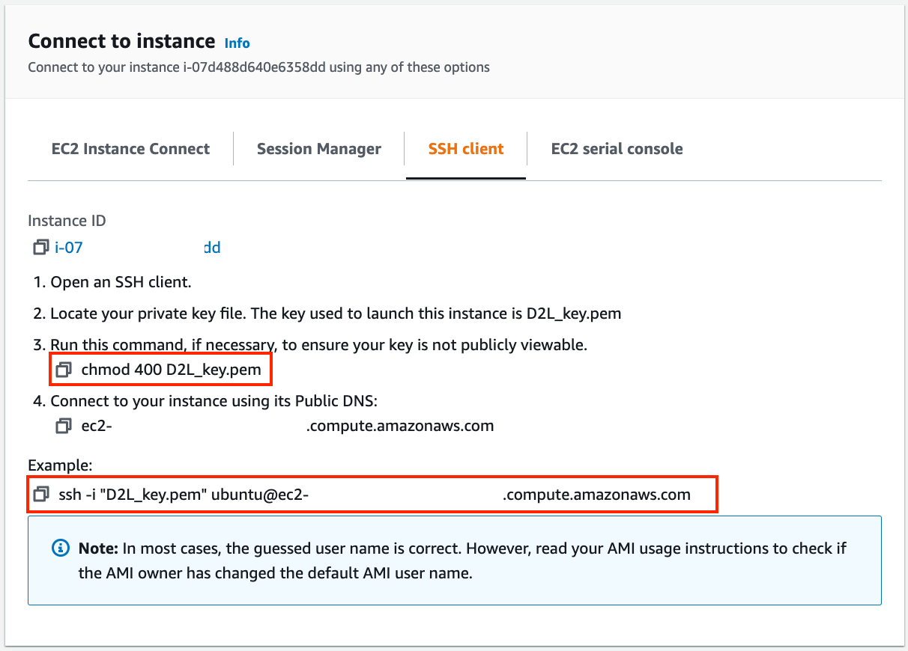
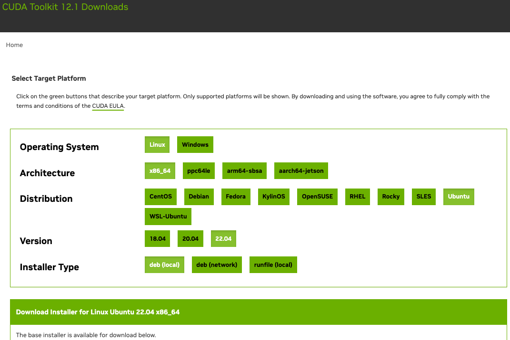

Using AWS EC2 Instances⚓︎
:label:sec_aws
In this section, we will show you how to install all libraries on a raw Linux machine. Recall that in :numref:sec_sagemaker we discussed how to use Amazon SageMaker, while building an instance by yourself costs less on AWS. The walkthrough includes three steps:
- Request for a GPU Linux instance from AWS EC2.
- Install CUDA (or use an Amazon Machine Image with preinstalled CUDA).
- Install the deep learning framework and other libraries for running the code of the book.
This process applies to other instances (and other clouds), too, albeit with some minor modifications. Before going forward, you need to create an AWS account, see :numref:sec_sagemaker for more details.
Creating and Running an EC2 Instance⚓︎
After logging into your AWS account, click "EC2" (:numref:fig_aws) to go to the EC2 panel.
 :width:
:width:400px
:label:fig_aws
:numref:fig_ec2 shows the EC2 panel.

:width:700px
:label:fig_ec2
Presetting Location⚓︎
Select a nearby data center to reduce latency, e.g., "Oregon" (marked by the red box in the top-right of :numref:fig_ec2). If you are located in China,
you can select a nearby Asia Pacific region, such as Seoul or Tokyo. Please note
that some data centers may not have GPU instances.
Increasing Limits⚓︎
Before choosing an instance, check if there are quantity
restrictions by clicking the "Limits" label in the bar on the left as shown in
:numref:fig_ec2.
:numref:fig_limits shows an example of such a
limitation. The account currently cannot open "p2.xlarge" instances according to the region. If
you need to open one or more instances, click on the "Request limit increase" link to
apply for a higher instance quota.
Generally, it takes one business day to
process an application.
 :width:
:width:700px
:label:fig_limits
Launching an Instance⚓︎
Next, click the "Launch Instance" button marked by the red box in :numref:fig_ec2 to launch your instance.
We begin by selecting a suitable Amazon Machine Image (AMI). Select an Ubuntu instance (:numref:fig_ubuntu).
 :width:
:width:700px
:label:fig_ubuntu
EC2 provides many different instance configurations to choose from. This can sometimes feel overwhelming to a beginner. :numref:tab_ec2 lists different suitable machines.
:Different EC2 instance types
:label:tab_ec2
| Name | GPU | Notes |
|---|---|---|
| g2 | Grid K520 | ancient |
| p2 | Kepler K80 | old but often cheap as spot |
| g3 | Maxwell M60 | good trade-off |
| p3 | Volta V100 | high performance for FP16 |
| p4 | Ampere A100 | high performance for large-scale training |
| g4 | Turing T4 | inference optimized FP16/INT8 |
All these servers come in multiple flavors indicating the number of GPUs used. For example, a p2.xlarge has 1 GPU and a p2.16xlarge has 16 GPUs and more memory. For more details, see the AWS EC2 documentation or a summary page. For the purpose of illustration, a p2.xlarge will suffice (marked in the red box of :numref:fig_p2x).
 :width:
:width:700px
:label:fig_p2x
Note that you should use a GPU-enabled instance with suitable drivers and a GPU-enabled deep learning framework. Otherwise you will not see any benefit from using GPUs.
We go on to select the key pair used to access
the instance. If you do not have a key pair, click "Create new key pair" in :numref:fig_keypair to generate a key pair. Subsequently,
you can select the
previously generated key pair.
Make sure that you download the key pair and store it in a safe location if you
generated a new one. This is your only way to SSH into the server.
 :width:
:width:500px
:label:fig_keypair
In this example, we will keep the default configurations for "Network settings" (click the "Edit" button to configure items such as the subnet and security groups). We just increase the default hard disk size to 64 GB (:numref:fig_disk). Note that CUDA by itself already takes up 4 GB.
 :width:
:width:700px
:label:fig_disk
Click "Launch Instance" to launch the created
instance. Click the
instance ID shown in :numref:fig_launching to view the status of this instance.
 :width:
:width:700px
:label:fig_launching
Connecting to the Instance⚓︎
As shown in :numref:fig_connect, after the instance state turns green, right-click the instance and select Connect to view the instance access method.
 :width:
:width:700px
:label:fig_connect
If this is a new key, it must not be publicly viewable for SSH to work. Go to the folder where you store D2L_key.pem and
execute the following command
to make the key not publicly viewable:
chmod 400 D2L_key.pem

:width:400px
:label:fig_chmod
Now, copy the SSH command in the lower red box of :numref:fig_chmod and paste onto the command line:
ssh -i "D2L_key.pem" ubuntu@ec2-xx-xxx-xxx-xxx.y.compute.amazonaws.com
When the command line prompts "Are you sure you want to continue connecting (yes/no)", enter "yes" and press Enter to log into the instance.
Your server is ready now.
Installing CUDA⚓︎
Before installing CUDA, be sure to update the instance with the latest drivers.
sudo apt-get update && sudo apt-get install -y build-essential git libgfortran3
Here we download CUDA 12.1. Visit NVIDIA's official repository to find the download link as shown in :numref:fig_cuda.

:width:500px
:label:fig_cuda
Copy the instructions and paste them onto the terminal to install CUDA 12.1.
# The link and file name are subject to changes
wget https://developer.download.nvidia.com/compute/cuda/repos/ubuntu2204/x86_64/cuda-ubuntu2204.pin
sudo mv cuda-ubuntu2204.pin /etc/apt/preferences.d/cuda-repository-pin-600
wget https://developer.download.nvidia.com/compute/cuda/12.1.0/local_installers/cuda-repo-ubuntu2204-12-1-local_12.1.0-530.30.02-1_amd64.deb
sudo dpkg -i cuda-repo-ubuntu2204-12-1-local_12.1.0-530.30.02-1_amd64.deb
sudo cp /var/cuda-repo-ubuntu2204-12-1-local/cuda-*-keyring.gpg /usr/share/keyrings/
sudo apt-get update
sudo apt-get -y install cuda
After installing the program, run the following command to view the GPUs:
nvidia-smi
Finally, add CUDA to the library path to help other libraries find it, such as appending the following lines to the end of ~/.bashrc.
export PATH="/usr/local/cuda-12.1/bin:$PATH"
export LD_LIBRARY_PATH=${LD_LIBRARY_PATH}:/usr/local/cuda-12.1/lib64
Installing Libraries for Running the Code⚓︎
To run the code of this book,
just follow steps in :ref:chap_installation
for Linux users on the EC2 instance
and use the following tips
for working on a remote Linux server:
- To download the bash script on the Miniconda installation page, right click the download link and select "Copy Link Address", then execute
wget [copied link address]. - After running
~/miniconda3/bin/conda init, you may executesource ~/.bashrcinstead of closing and reopening your current shell.
Running the Jupyter Notebook remotely⚓︎
To run the Jupyter Notebook remotely you need to use SSH port forwarding. After all, the server in the cloud does not have a monitor or keyboard. For this, log into your server from your desktop (or laptop) as follows:
# This command must be run in the local command line
ssh -i "/path/to/key.pem" ubuntu@ec2-xx-xxx-xxx-xxx.y.compute.amazonaws.com -L 8889:localhost:8888
Next, go to the location of the downloaded code of this book on the EC2 instance, then run:
conda activate d2l
jupyter notebook
:numref:fig_jupyter shows the possible output after you run the Jupyter Notebook. The last row is the URL for port 8888.
 :width:
:width:700px
:label:fig_jupyter
Since you used port forwarding to port 8889,
copy the last row in the red box of :numref:fig_jupyter,
replace "8888" with "8889" in the URL,
and open it in your local browser.
Closing Unused Instances⚓︎
As cloud services are billed by the time of use, you should close instances that are not being used. Note that there are alternatives:
- "Stopping" an instance means that you will be able to start it again. This is akin to switching off the power for your regular server. However, stopped instances will still be billed a small amount for the hard disk space retained.
- "Terminating" an instance will delete all data associated with it. This includes the disk, hence you cannot start it again. Only do this if you know that you will not need it in the future.
If you want to use the instance as a template for many more instances,
right-click on the example in :numref:fig_connect and select "Image" \(\rightarrow\)
"Create" to create an image of the instance. Once this is complete, select
"Instance State" \(\rightarrow\) "Terminate" to terminate the instance. The next
time you want to use this instance, you can follow the steps in this section
to create an instance based on
the saved image. The only difference is that, in "1. Choose AMI" shown in
:numref:fig_ubuntu, you must use the "My AMIs" option on the left to select your saved
image. The created instance will retain the information stored on the image hard
disk. For example, you will not have to reinstall CUDA and other runtime
environments.
Summary⚓︎
- We can launch and stop instances on demand without having to buy and build our own computer.
- We need to install CUDA before using the GPU-enabled deep learning framework.
- We can use port forwarding to run the Jupyter Notebook on a remote server.
Exercises⚓︎
- The cloud offers convenience, but it does not come cheap. Find out how to launch spot instances to see how to reduce costs.
- Experiment with different GPU servers. How fast are they?
- Experiment with multi-GPU servers. How well can you scale things up?
创建日期: November 25, 2023